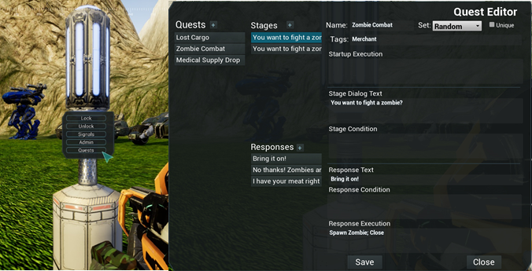
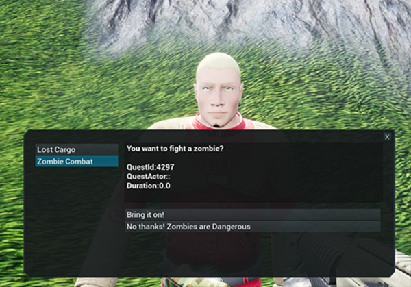

Missions
GearStorm Quest Scripting Guide
Welcome to the exciting world of GearStorm Quest Editing. As a Game Admin you will have access to shape your world,
configure your NPCs and their behavior and create intricate experiences for players. So, let’s jump right in.
First, Quests in GearStorm are a little different. Quests and NPC dialog are part of the same system, interacting
with NPCs is the main (but not only) way quests move forward in GearStorm. Quests are made up of Stages, and each
Stage usually has one or more player dialog Responses that may be available if certain conditions are met.
To start, just Context Activate (Alt-E, or Alt-Middle Mouse) any Base Core and select Quests.This will bring up the Quest
Editor. Quests are made up of several components.
- Name: The name of the Quest as displayed in Dialog
- Tags: Strings that tell NPCs and other objects to make this Quest available in the Dialog. NPCs have
editable tags as well.
- Accessible by admins through their Context Menu (Alt-E)
- Stages: States in the quest, when a quest evaluates in a Dialog, the Dialog will pick the first Stage which
has a condition that evaluates to true.
- Responses: Each stage has an array of responses, these are buttons the player can press IF the response
condition evaluates to true. Once selected by the player, the Response Execution runs.
- Conditions: A set of test commands to evaluate world and player conditions.
- Executions: A set of script commands that invoke changes to the player and the world.
- Texts: Strings displayed as statements from NPCs or as Responses from the player.
- Set: When the quest is started and how often.
When a player initiates dialog. The player is presented with a list of quests to discuss with an NPC. This list
is
created based on the Quest Tags that match the NPCs Tags.

Once the player picks a quest to
discuss. The Quest Manager will evaluate each stage’s Condition until it finds
one
that is true. It will then display that Stage’s text along with a list of Responses. Each response also has a
condition. The player only has the response option if the response conditions are met. E.g. To turn in a quest
item.
If the player then selects a response, the response’s Execution is run. This can change variables, add or remove
items from player inventory and many other things that change the game environment. Once this is done, the
execution
can either close the dialog or the stage selection process if repeated.
Conditions and Executions have differing sets of commands. More listed on the next Page.
Quest Sets: This is important. When a quest starts is determined by the Quest Set variable.
- None: The quest will never start, used for quests under development
- Manual: The Quest can only be started from a script
- Random: The quest will start randomly, added to the list of available random quests
- Rare: The quest will start randomly, but much less frequently than other random quests
- Startup: Start Immediately and every time the server starts
Condition Statements
Condition statements exist to test game and player state. Statements can be compound,
that is multiple
conditions
can be added to a statement. These are separated by a Semicolon “;” or New Line. If statements are compound,
all
must be true for the condition to be true. Blank statements always evaluate to true. Any line that is
non-zero is
considered to be true. Conditions are not case sensitive.
Condition Functions
- IsDay - Returns true if is daylight, else false
- IsNight – Returns true if dark, else false
- GetSunlightLevel – Returns brightness of sunlight, 0=False for night
- HasItem [Item_Name / Item#] [#Count] - Returns count of item in player inventory if >= #Count else
returns
0
- PlayerStat [StatName] - Returns the number of the player stat, available StatNames are
- HEALTH HEALTHRATIO MAXHEALTH
- STAMINA STAMINARATIO MAXSTAMINA
- SHIELD SHIELDRATIO MAXSHIELD
- ARMOR ARMORRATIO MAXARMOR
- POWER POWERRATIO MAXPOWER
Variables
$[VarName] - Variable indicator, Variables are set in the Execution stage and can be referenced
here
Operators
[+,-,*,/,!,%,&] operators can be used in conjunction with Variables and other Condition
functions
Comparison operators
[=,==,>,<,>=,<=,!=] These are evaluated after other functions to produce true/false
values.
Examples:
- $MyHealthVar >= PlayerStat Health;
- HasItem Gold_Ore $MinimumGoldOre
Execution Statements
Execution statements make things happen in the game or to the player. Like condition
statements, these are separated
by a Semicolon “;” or New Line. Execution statements are not case sensitive.
Execution Functions
- Close – Closes Dialog Menu
- SetMenuMode [Mode] changes to a separate menu mode. Currently available modes are:
- INVENTORY MERCHANT
- RemoveItem [Item_Name / Item#] [#Count] - Removes up to Count items from
Player’s Inventory
- AddItem [Item_Name / Item#] [#Count] - Gives player Count of items
- AddCoins [#Count] - Gives Count # of XI coins
- Transmit [#Channel] - Sends a signal on this channel [Not Complete Yet]
- Spawn [Item_Name/ Item #] [Location] Spawns actor if possible at location,
More on location options later
- Set [VarName] [Value] Defines a variable, Condition functions can be used
to determine Value
- StartQuest [QuestName] Starts a Manual quest based on its Name string (use
“_” for spaces in Quest Name)
Location Designation
- [No args] -Returns Player Location
- [X] [Y] -Returns Vector at Voxel of heightmap
- [X] [Y] [Z] -Returns Vector at Voxel
- RADIUS [X] -Randomly selects location X Radius of Player in Unreal
Units
- POLAR [X] [Y] -Finds point at Angle X with Radius Y
Examples:
- SetMenuMode Merchant
- AddItem Gold 2
- Set $MyVar PlayerStat Health
Missions are one of the key features of GearStorm. There are a built-in
number of missions available in the game,
however, gamemasters will also be able to create and develop their own
missions.